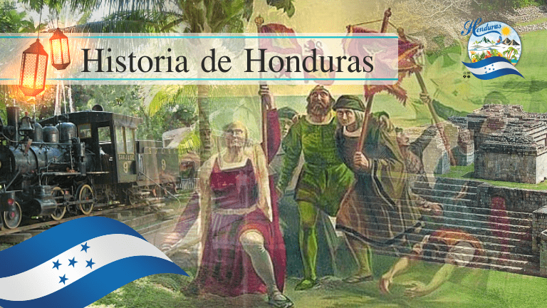
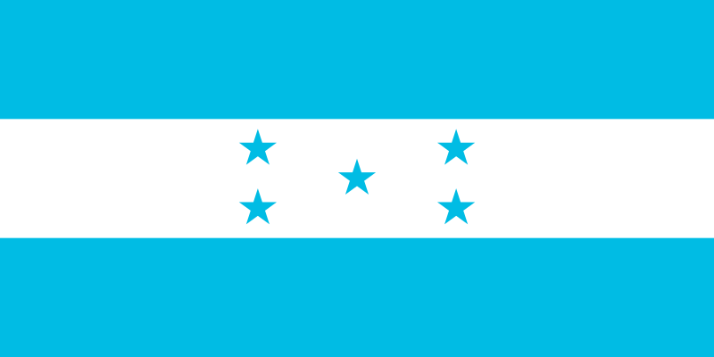
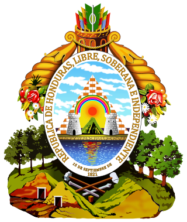
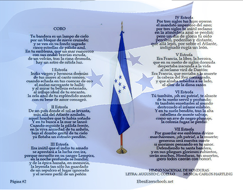
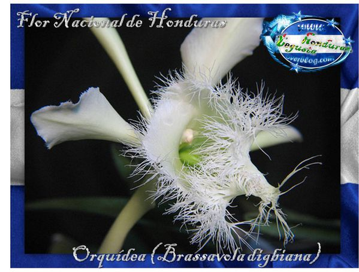
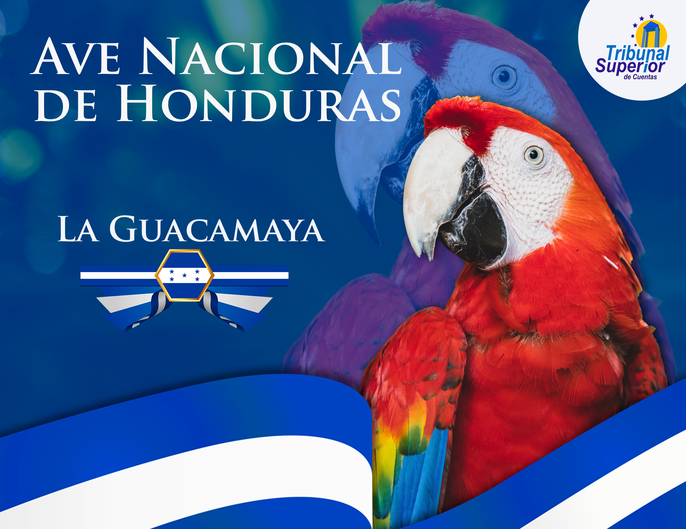
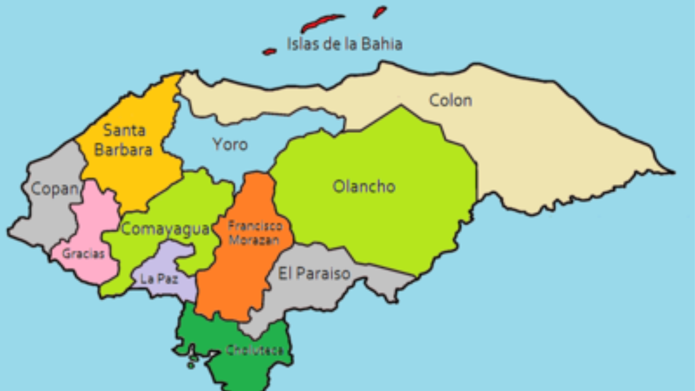

Bienvenido a nuestra página sobre Honduras
Honduras, oficialmente República de Honduras, es un país de América Central con costas en el mar Caribe al norte y en el océano Pacífico al sur. Honduras es un estado unitario y se autodefine como libre, soberano e independiente. Tegucigalpa, junto con Comayagüela, constituyen la capital del país, siendo el primer y mas grande nucleo urbano de Honduras. Limita al norte y este con el mar Caribe, al sureste con Nicaragua, al suroeste con el golfo de Fonseca y al sur con El Salvador, y al oeste con Guatemala, en cuanto a los límites marítimos colinda con México, Belice, Cuba, Islas Caimán, Guatemala, Jamaica, Colombia, Nicaragua, y El Salvador. La extensión territorial de Honduras, comprendiendo todas sus islas, es de 112 492 km². La organización territorial de Honduras divide el país, política y administrativamente, en 18 departamentos, y estos en municipios, para un total de 298 municipios. La forma de gobierno es republicana, democrática y representativa. Se ejerce por tres poderes: Legislativo, Ejecutivo y Judicial, complementarios e independientes y sin relaciones de subordinación. La población de Honduras supera los 10 millones de habitantes, dedicada en su mayor parte a las actividades agropecuarias, además del comercio, manufacturas, y servicios públicos entre otras actividades. El departamento de Honduras con mayor densidad de población es Cortés con 400.3 hab./km².El país es multiétnico, consta de cuatro grandes familias étnicas: los blancos o mestizos siendo la mayoría poblacional. Los pueblos indígenas como los lencas, misquitos, tolupanes, chortis, pech, tawahkas, garífunas y pueblos negros de habla inglesa. El territorio de Honduras es muy accidentado, lo forman altas filas de montañas, elevadas planicies, valles profundos en los que se encuentran llanos extensos y fértiles cruzados por ríos más o menos caudalosos y algunos navegables, todo lo cual contribuye a su rica biodiversidad. Se estima que en Honduras existen unas 8000 especies de plantas, alrededor de 250 de reptiles y anfibios, más de 700 especies de aves y 110 especies de mamíferos, distribuidos en las diferentes regiones. Honduras declaró su Independencia de España el 15 de septiembre de 1821. En enero de 1839, se adoptó formalmente la primera constitución del país. El general Francisco Ferrera se convirtió en el primer presidente constitucional (1841-1843) del país. En 1891 se fundó el primer partido político, el Partido Liberal de Honduras, y en 1902 el Partido Nacional de Honduras, los cuales gobernaron el país hasta 2022, cuando el Partido Libertad y Refundación, fundado en 2011, llegó a la presidencia. Su llegada al poder también marcó la ascensión de la primera mujer presidenta, Xiomara Castro. Con las elecciones generales de 1981 y la constitución de 1982 comenzó la llamada Era Democrática. En 2009 el país atraviesa la mayor de sus crisis políticas
Historia de Honduras
Honduras es un país con una rica historia que se remonta a hace más de 14,000 años. Antes de la llegada de los españoles, Honduras estaba habitada por pueblos indígenas que se caracterizaban por dos tipos culturales diferentes. En marzo de 1524, Gil González Dávila se convirtió en el primer español en arribar a Honduras con propósitos de conquista. Honduras fue una provincia de la Capitanía General de Guatemala que a su vez estuvo dentro del virreinato de Nueva España. En 1821 se firma el Acta de Independencia de Centro América, y en 1838 Honduras se independiza de Centroamérica y se inicia el proceso de integración definitivo que da lugar a la Honduras contemporánea. Durante el siglo XX, Honduras ha enfrentado una falta de progreso social, que aún está en vías de solución. En la actualidad, Honduras es un país con una peculiar historia de muchos cientos de años, con unas tradiciones, costumbres y cultura que proceden de muchos siglos atrás en el tiempo
Los Simbolos de Honduras
Los símbolos patrios de Honduras son importantes para la identidad y el patriotismo de los hondureños. Los símbolos nacionales mayores son la Bandera Nacional, el Escudo Nacional y el Himno Nacional.
La Bandera
La Bandera Nacional de Honduras fue establecida por decreto del Congreso Nacional el 6 de febrero de 1866 y tiene tres franjas horizontales de igual tamaño, siendo la superior y la inferior de color azul y la central blanca.
El Escudo
El Escudo Nacional de Honduras fue creado el 3 de octubre de 1825 y tiene símbolos alusivos en representación de la historia de Honduras, territorio y recursos naturales que posee el país.
El Himno
El Himno Nacional de Honduras fue escrito por Augusto C. Coello y compuesto por Carlos Hartling en 1915.
La Flor
La Flor Nacional es la Orquídea
El Ave
la Ave Nacional es el Guardabarranco.
El Arbol

el Árbol Nacional es el Pino
Es importante que los ciudadanos conozcan la historia y las raíces de los símbolos patrios y guarden respeto ante ellos.
La Extensión Territorial en Honduras
Honduras es un país ubicado en la parte más ancha del istmo centroamericano. Limita al norte y al este con el Mar Caribe, al sureste con Nicaragua, al suroeste con el Golfo de Fonseca y El Salvador, y al oeste con Guatemala. En términos de límites marítimos, limita con México, Belice, Cuba, Islas Caimán, Guatemala, Jamaica, Colombia, Nicaragua y El Salvador.Según la Corte Internacional de Justicia, la extensión de Honduras es de 112.492 kilómetros cuadrados. Sin embargo, existe cierta controversia con respecto a esta cifra, y algunas fuentes sugieren que la extensión real puede ser ligeramente diferente
Turismo en Honduras
Descubre los destinos turísticos más populares y emocionantes de Centroamérica.
Contacto
Si tienes preguntas o comentarios, no dudes en ponerte en contacto con nosotros.